01
LANGUAGE & INTELLIGENCE
Large Language Models
Understanding and working with language models is a central focus of my doctoral research in artificial intelligence.
PH.D. STUDENT · ARTIFICIAL INTELLIGENCE
Language. Intelligence.
Scientific discovery.
I study large language models and AI for Science, exploring the connection between intelligent systems and scientific inquiry.

THE PERSON BEHIND THE RESEARCH
I am a Ph.D. student in Artificial Intelligence at Shenzhen University, in a joint doctoral training program with Shenzhen University of Advanced Technology.
I am advised by Prof. Min Yang, Prof. Shiwen Ni, and Prof. Pengfei Xu.
Previously, I received my M.Sc. in Computer Science from Nanyang Technological University and my B.Eng. from Harbin Institute of Technology.
RESEARCH INTERESTS
I am interested in how we build intelligent systems—and what they can help us discover.
LANGUAGE & INTELLIGENCE
Understanding and working with language models is a central focus of my doctoral research in artificial intelligence.
INTELLIGENCE & DISCOVERY
Exploring how artificial intelligence can support scientific inquiry and open new possibilities for discovery.
Egocentric vision · 3D hand reconstruction · Neuro-symbolic reasoning
SELECTED WORK
An exploration of perception, geometry, and reasoning.
Exploring fine-grained hand action understanding from an egocentric perspective, connecting 3D hand geometry with explicit physical states and language-model reasoning.
Thesis recordConceptual illustration · not an inference demo
MONOCULAR IMAGE → 3D GEOMETRY
Use HaMeR to recover a 3D hand mesh from a monocular view.
3D GEOMETRY → PHYSICAL STATES
Translate geometry into physical states, including pinch distance and wrist velocity.
PHYSICAL STATES → ACTION REASONING
Provide these states to an LLM to reason about the observed hand action.
This work is a proof of concept evaluated on a custom wrist-worn dataset.
PUBLICATIONS & WRITING
Repository record available; full-text access is restricted by NTU.
EDUCATION
Ph.D. in Artificial Intelligence
Joint doctoral training with Shenzhen University of Advanced Technology
M.Sc. in Computer Science
Thesis advised by Prof. Bihan Wen and Dr. Satoshi Tsutsui
B.Eng. in Measurement and Control Technology and Instrumentation
GET IN TOUCH
Research ideas, thoughtful questions, and interesting conversations are always welcome.